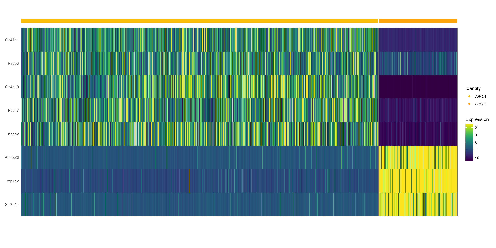

Last updated: 2022-12-07
Checks: 6 1
Knit directory:
CorticalAmygdala_pipelines/
This reproducible R Markdown analysis was created with workflowr (version 1.7.0). The Checks tab describes the reproducibility checks that were applied when the results were created. The Past versions tab lists the development history.
The R Markdown is untracked by Git. To know which version of the R
Markdown file created these results, you’ll want to first commit it to
the Git repo. If you’re still working on the analysis, you can ignore
this warning. When you’re finished, you can run
wflow_publish to commit the R Markdown file and build the
HTML.
Great job! The global environment was empty. Objects defined in the global environment can affect the analysis in your R Markdown file in unknown ways. For reproduciblity it’s best to always run the code in an empty environment.
The command set.seed(20220906) was run prior to running
the code in the R Markdown file. Setting a seed ensures that any results
that rely on randomness, e.g. subsampling or permutations, are
reproducible.
Great job! Recording the operating system, R version, and package versions is critical for reproducibility.
Nice! There were no cached chunks for this analysis, so you can be confident that you successfully produced the results during this run.
Great job! Using relative paths to the files within your workflowr project makes it easier to run your code on other machines.
Great! You are using Git for version control. Tracking code development and connecting the code version to the results is critical for reproducibility.
The results in this page were generated with repository version 9a8b19a. See the Past versions tab to see a history of the changes made to the R Markdown and HTML files.
Note that you need to be careful to ensure that all relevant files for
the analysis have been committed to Git prior to generating the results
(you can use wflow_publish or
wflow_git_commit). workflowr only checks the R Markdown
file, but you know if there are other scripts or data files that it
depends on. Below is the status of the Git repository when the results
were generated:
Ignored files:
Ignored: .RData
Ignored: .Rhistory
Ignored: .Rproj.user/
Ignored: data/behavior/
Ignored: data/projections/
Ignored: data/sequencing/
Ignored: renv/library/
Ignored: renv/staging/
Untracked files:
Untracked: analysis/behavior_01-topography-testing.Rmd
Untracked: analysis/behavior_01-topography.Rmd
Untracked: analysis/behavior_02-genetics.Rmd
Untracked: analysis/behavior_03-projections.Rmd
Untracked: analysis/behavior_04-projections_silencing_tmt.Rmd
Untracked: analysis/behavior_05-projections_silencing_2PE.Rmd
Untracked: analysis/projections.Rmd
Untracked: analysis/sequencing-02B-initial_classification_rd1_RNA.Rmd
Untracked: analysis/sequencing-02C-reprocess_Neuron_rd1_RNA.Rmd
Untracked: analysis/sequencing-02D-Neuron_classification_rd1_RNA.Rmd
Untracked: analysis/sequencing-02E-reprocess_Glut_rd1_RNA.Rmd
Untracked: analysis/sequencing-02F-reprocess_GABA_rd1_RNA.Rmd
Untracked: analysis/sequencing-02G-Glut_classification_rd1_RNA.Rmd
Untracked: analysis/sequencing-03A-merge_filtered_RNA.Rmd
Untracked: analysis/sequencing-03B-initial_classification_RNA.Rmd
Untracked: analysis/sequencing-04-initial_deg.Rmd
Untracked: analysis/sequencing-04A-reprocess_Neuron_RNA.Rmd
Untracked: analysis/sequencing-04B-reprocess_Nonneuron_RNA.Rmd
Untracked: analysis/sequencing-04C-Neuron_classification_RNA.Rmd
Untracked: analysis/sequencing-04D-Nonneuron_classification_RNA.Rmd
Untracked: analysis/sequencing-05A-reprocess_Glut_RNA.Rmd
Untracked: analysis/sequencing-05B-reprocess_GABA_RNA.Rmd
Untracked: analysis/sequencing-05C-reprocess_Astro_RNA.Rmd
Untracked: analysis/sequencing-05D-reprocess_Micro_RNA.Rmd
Untracked: analysis/sequencing-05E-reprocess_Macro_RNA.Rmd
Untracked: analysis/sequencing-05F-reprocess_OPC_RNA.Rmd
Untracked: analysis/sequencing-05G-reprocess_NFOL_RNA.Rmd
Untracked: analysis/sequencing-05H-reprocess_MOL_RNA.Rmd
Untracked: analysis/sequencing-05I-reprocess_Mural_RNA.Rmd
Untracked: analysis/sequencing-05J-reprocess_ABC_RNA.Rmd
Untracked: analysis/sequencing-05K-reprocess_VLMC_RNA.Rmd
Untracked: analysis/sequencing-05M-GABA_classification_RNA.Rmd
Untracked: analysis/sequencing-05N-Astro_classification_RNA.Rmd
Untracked: analysis/sequencing-05O-Macro_classification_RNA.Rmd
Untracked: analysis/sequencing-05P-NFOL_classification_RNA.Rmd
Untracked: analysis/sequencing-05Q-MOL_classification_RNA.Rmd
Untracked: analysis/sequencing-05R-ABC_classification_RNA.Rmd
Untracked: analysis/sequencing-05S-VLMC_classification_RNA.Rmd
Untracked: analysis/sequencing-05X-reprocess_Astro.Rmd
Untracked: analysis/sequencing-05X-reprocess_GABAergic.Rmd
Untracked: analysis/sequencing-05X-reprocess_Glutamatergic.Rmd
Untracked: analysis/sequencing-05X-reprocess_Microglia.Rmd
Untracked: analysis/sequencing-05X-reprocess_Neuron.Rmd
Untracked: analysis/sequencing-05X-reprocess_Nonneuron.Rmd
Untracked: analysis/sequencing-05X-reprocess_OLG.Rmd
Untracked: analysis/sequencing-05X-reprocess_OPC.Rmd
Untracked: analysis/sequencing-05X-reprocess_VLMC.Rmd
Untracked: analysis/sequencing-06B-annotate_GABAergic.Rmd
Untracked: code/behavior-color_scales.R
Untracked: code/behavior_misc.R
Untracked: code/sequencing-color_scales.R
Untracked: code/sequencing-plot_functions.R
Untracked: code/sequencing_misc.R
Untracked: output/sequencing/
Unstaged changes:
Modified: analysis/sequencing-02A-merge_rd1_RNA.Rmd
Modified: analysis/sequencing-03-initial_classification.Rmd
Deleted: analysis/sequencing-05A-reprocess_Neuron.Rmd
Deleted: analysis/sequencing-05B-reprocess_Nonneuron.Rmd
Deleted: analysis/sequencing-05C-reprocess_Glutamatergic.Rmd
Deleted: analysis/sequencing-05D-reprocess_GABAergic.Rmd
Deleted: analysis/sequencing-05E-reprocess_Astro.Rmd
Deleted: analysis/sequencing-05F-reprocess_Microglia.Rmd
Deleted: analysis/sequencing-05G-reprocess_OPC.Rmd
Deleted: analysis/sequencing-05H-reprocess_OLG.Rmd
Deleted: analysis/sequencing-05I-reprocess_VLMC.Rmd
Note that any generated files, e.g. HTML, png, CSS, etc., are not included in this status report because it is ok for generated content to have uncommitted changes.
There are no past versions. Publish this analysis with
wflow_publish() to start tracking its development.
This notebook assigns broad identities based on well-known marker genes, consolidates them into legible identities, and then exports them for subclustering within their broad identities.
id <- params$id
cell_class <- params$class
path <- params$path
dimn <- params$dimn
source("code/sequencing_misc.R")
source("code/sequencing-color_scales.R")
source("code/sequencing-plot_functions.R")
require(Seurat)
require(tidyverse)
require(knitr)
require(scCustomize)
require(clustree)
require(chisq.posthoc.test)
require(speckle)
require(ggtree)
require(pvclust)
require(dendextend)
require(heatmap3)
require(colorRamps)
require(Libra)
require(enrichR)
require(EnhancedVolcano)
# all images are PDFs, avoids pixelation
knitr::opts_chunk$set(dev = 'pdf')Imports the merged and transformed Seurat object from step 02. This object should contain SCT data, all relevant metadata, and it should be barcode- and feature-filtered already.
array <- readRDS(paste0(path, id, "_", cell_class, "_reprocessed_RNA.rds"))Clusters nuclei using Seurat’s implementation of the Leiden clustering algorithm (see methods for references), which improves upon the more traditional Louvain algorithm. Clustering is performed at a variety of resolutions so that the best can be chosen from among the different results, ensuring optimal cluster assignments prior to downstream segmentation.
array <- FindNeighbors(array, dims = 1:dimn, k.param = 30, verbose = FALSE)
res_index <- c(0.01, seq(0.1, 1, 0.1))
for (i in 1:length(res_index)){
array <- FindClusters(array, method = 4, resolution = res_index[i], verbose = FALSE)
}clustree(array, prefix = "SCT_snn_res.")clustree(array, prefix = "SCT_snn_res.", node_colour = "sc3_stability")src_list <- lapply(res_index, function(res) {
src <- c(
"#### Res {{res}} {.unnumbered}",
"```{r pca-res-{{res}}, message = FALSE, warning = FALSE}",
"resolution_plot_formatted(array, 'pca', {{res}}, 'SCT')",
"```",
""
)
knit_expand(text = src)
})
out <- knit_child(text = unlist(src_list), options = list(cache = FALSE))resolution_plot_formatted(array, 'pca', 0.01, 'SCT')resolution_plot_formatted(array, 'pca', 0.1, 'SCT')resolution_plot_formatted(array, 'pca', 0.2, 'SCT')resolution_plot_formatted(array, 'pca', 0.3, 'SCT')resolution_plot_formatted(array, 'pca', 0.4, 'SCT')resolution_plot_formatted(array, 'pca', 0.5, 'SCT')resolution_plot_formatted(array, 'pca', 0.6, 'SCT')resolution_plot_formatted(array, 'pca', 0.7, 'SCT')resolution_plot_formatted(array, 'pca', 0.8, 'SCT')resolution_plot_formatted(array, 'pca', 0.9, 'SCT')resolution_plot_formatted(array, 'pca', 1, 'SCT')src_list <- lapply(res_index, function(res) {
src <- c(
"#### Res {{res}} {.unnumbered}",
"```{r tsne-res-{{res}}, message = FALSE, warning = FALSE}",
"resolution_plot_formatted(array, 'tsne', {{res}}, 'SCT')",
"```",
""
)
knit_expand(text = src)
})
out <- knit_child(text = unlist(src_list), options = list(cache = FALSE))resolution_plot_formatted(array, 'tsne', 0.01, 'SCT')resolution_plot_formatted(array, 'tsne', 0.1, 'SCT')resolution_plot_formatted(array, 'tsne', 0.2, 'SCT')resolution_plot_formatted(array, 'tsne', 0.3, 'SCT')resolution_plot_formatted(array, 'tsne', 0.4, 'SCT')resolution_plot_formatted(array, 'tsne', 0.5, 'SCT')resolution_plot_formatted(array, 'tsne', 0.6, 'SCT')resolution_plot_formatted(array, 'tsne', 0.7, 'SCT')resolution_plot_formatted(array, 'tsne', 0.8, 'SCT')resolution_plot_formatted(array, 'tsne', 0.9, 'SCT')resolution_plot_formatted(array, 'tsne', 1, 'SCT')src_list <- lapply(res_index, function(res) {
src <- c(
"#### Res {{res}} {.unnumbered}",
"```{r umap-res-{{res}}, message = FALSE, warning = FALSE}",
"resolution_plot_formatted(array, 'umap', {{res}}, 'SCT')",
"```",
""
)
knit_expand(text = src)
})
out <- knit_child(text = unlist(src_list), options = list(cache = FALSE))resolution_plot_formatted(array, 'umap', 0.01, 'SCT')resolution_plot_formatted(array, 'umap', 0.1, 'SCT')resolution_plot_formatted(array, 'umap', 0.2, 'SCT')resolution_plot_formatted(array, 'umap', 0.3, 'SCT')resolution_plot_formatted(array, 'umap', 0.4, 'SCT')resolution_plot_formatted(array, 'umap', 0.5, 'SCT')resolution_plot_formatted(array, 'umap', 0.6, 'SCT')resolution_plot_formatted(array, 'umap', 0.7, 'SCT')resolution_plot_formatted(array, 'umap', 0.8, 'SCT')resolution_plot_formatted(array, 'umap', 0.9, 'SCT')resolution_plot_formatted(array, 'umap', 1, 'SCT')Optimal resolution can be selected by examining clustering on dimension-reduced data to determine if they match visual clustering. Further, clustree (and its packaged stability metric) can be used to find the highest resolution that does not lose stability, providing an optimal balance between over- and under-clustering. It is difficult to automate this without some degree of supervision or hand-curation. This is mostly to identify large clusters, so there is little need to get extremely specific so long as clusters are coherent.
optimal_res <- 0.1
clusters <- array[[paste0("SCT_snn_res.", optimal_res)]]
array[["seurat_clusters"]] <- NULL
for (i in 1:11){
array[[paste0("SCT_snn_res.", res_index[i])]] <- NULL
}
array <- AddMetaData(array, clusters, col.name = "clusters")
Idents(array) <- "clusters"
# helps downstrean formatting to regenerate cluster vector from the array vector
type_clusters_marker <- type_clusters <- as.character(array$clusters)
paste(optimal_res, "is optimal clustering resolution")[1] "0.1 is optimal clustering resolution"pct_expressed_aplCoA <- do.call(cbind.data.frame,
(lapply(levels(array$clusters),
function(x) rowSums(array@assays$RNA@counts[, array$clusters == x & array$Region == "aplCoA"] != 0)
/ length(array$clusters[array$clusters == x & array$Region == "aplCoA"]))))
pct_expressed_pplCoA <- do.call(cbind.data.frame,
(lapply(levels(array$clusters),
function(x) rowSums(array@assays$RNA@counts[, array$clusters == x & array$Region == "pplCoA"] != 0)
/ length(array$clusters[array$clusters == x & array$Region == "pplCoA"]))))
pct_expressed <- pmax(pct_expressed_aplCoA, pct_expressed_pplCoA)
colnames(pct_expressed) <- levels(array$clusters)
rm(pct_expressed_aplCoA, pct_expressed_pplCoA)
# find de novo markers, clusters
marker_type <- markers_sc_wilcox(array, "clusters")
# find regional markers within cell types
marker_type_region <- markers_pb_edgeRLRT(array, "clusters", 0.1)# region-specific
marker_type_region_aplCoA <- lapply(marker_type_region,
function(x) {x[x$p_val_adj < .05 & x$avg_logFC > 0.585,]})
marker_type_region_pplCoA <- lapply(marker_type_region,
function(x) {x[x$p_val_adj < .05 & x$avg_logFC < -0.585,]})
# based on numbers for max of each one
deg_range_type <- c(0, 15)
markers_list <- c("Slc47a1", "Rspo3", # ABC
"Slc4a10", "Pcdh7", "Kcnb2", # 0
"Ranbp3l", "Atp1a2", "Slc7a14") # 1 Based on known marker gene expression, assign broad cellular identities to clusters at the optimal resolution selected. These identities are hand-assigned, and multiple clusters are in many cases combined into broad cellular identities due to uneven differences between cell types.
type_clusters[type_clusters %in% "0"] <- "ABC.1"
type_clusters_marker[type_clusters_marker %in% "0"] <- "ABC.Slc4a10"
names(marker_type)[1] <- "ABC.1 | ABC.Slc4a10"
type_clusters[type_clusters %in% "1"] <- "ABC.2"
type_clusters_marker[type_clusters_marker %in% "1"] <- "ABC.Ranbp3l"
names(marker_type)[2] <- "ABC.2 | ABC.Ranbp3l"
# annotate all of these
names(marker_type_region_aplCoA) <- names(marker_type_region_pplCoA) <- names(marker_type)
# replace clusters with curated types
array <- AddMetaData(array, as.factor(type_clusters), col.name = "Type")
array <- AddMetaData(array, as.factor(type_clusters_marker), col.name = "Type.Marker")
array$Type <- factor(array$Type, levels = c("ABC.1", "ABC.2"))
array$Type.Marker <- factor(array$Type.Marker, levels = c("ABC.Slc4a10", "ABC.Ranbp3l"))
Idents(array) <- "Type"
plot_group_array <- cbind.data.frame(array$Type,
array$orig.ident,
array$Region)
colnames(plot_group_array) <- c("Type", "Batch", "Region")
table(array$Type)
ABC.1 ABC.2
897 196 src_list <- mapply(function(tab_name, dr_type) {
src <- c(
"## {{tab_name}} {.unnumbered}",
"```{r type-{{tab_name}}, message = FALSE, warning = FALSE}",
"cluster_plot_formatted(array, '{{dr_type}}', 'Type', abc_type_colors)",
"```",
""
)
knit_expand(text = src)
}, dr_params$name, dr_params$type)
out <- knit_child(text = unlist(src_list), options = list(cache = FALSE))cluster_plot_formatted(array, 'pca', 'Type', abc_type_colors)cluster_plot_formatted(array, 'tsne', 'Type', abc_type_colors)cluster_plot_formatted(array, 'umap', 'Type', abc_type_colors)src_list <- lapply(names(marker_type_region), function(clusters) {
src <- c(
"#### {{clusters}} {.unnumbered}",
"```{r volcano-unlabeled-{{clusters}}, message = FALSE, warning = FALSE, fig.height = 12, fig.width = 12}",
"enhanced_volcano_plot(marker_type_region[['{{clusters}}']],
title_id = paste('{{clusters}}'), label_size = 0)",
"```",
""
)
knit_expand(text = src)
})
out <- knit_child(text = unlist(src_list), options = list(cache = FALSE))enhanced_volcano_plot(marker_type_region[['0']],
title_id = paste('0'), label_size = 0)enhanced_volcano_plot(marker_type_region[['1']],
title_id = paste('1'), label_size = 0)src_list <- lapply(names(marker_type_region), function(clusters) {
src <- c(
"#### {{clusters}} {.unnumbered}",
"```{r volcano-labeled-{{clusters}}, message = FALSE, warning = FALSE, fig.height = 12, fig.width = 12}",
"enhanced_volcano_plot(marker_type_region[['{{clusters}}']],
title_id = paste('{{clusters}}'), label_size = 1)",
"```",
""
)
knit_expand(text = src)
})
out <- knit_child(text = unlist(src_list), options = list(cache = FALSE))enhanced_volcano_plot(marker_type_region[['0']],
title_id = paste('0'), label_size = 1)enhanced_volcano_plot(marker_type_region[['1']],
title_id = paste('1'), label_size = 1)src_list <- lapply(names(marker_type), function(group) {
src <- c(
"#### {{group}} {.unnumbered}",
"```{r marker-type-{{group}}, message = FALSE, warning = FALSE}",
"marker_type[['{{group}}']]",
"```",
""
)
knit_expand(text = src)
})
out <- knit_child(text = unlist(src_list), options = list(cache = FALSE))marker_type[['ABC.1 | ABC.Slc4a10']]marker_type[['ABC.2 | ABC.Ranbp3l']]src_list <- lapply(names(marker_type_region_aplCoA), function(group) {
src <- c(
"##### {{group}} {.unnumbered}",
"```{r marker-type-aplCoA-{{group}}, message = FALSE, warning = FALSE}",
"marker_type_region_aplCoA[['{{group}}']]",
"```",
""
)
knit_expand(text = src)
})
out <- knit_child(text = unlist(src_list), options = list(cache = FALSE))marker_type_region_aplCoA[['ABC.1 | ABC.Slc4a10']]marker_type_region_aplCoA[['ABC.2 | ABC.Ranbp3l']]src_list <- lapply(names(marker_type_region_pplCoA), function(group) {
src <- c(
"##### {{group}} {.unnumbered}",
"```{r marker-type-pplCoA-{{group}}, message = FALSE, warning = FALSE}",
"marker_type_region_pplCoA[['{{group}}']]",
"```",
""
)
knit_expand(text = src)
})
out <- knit_child(text = unlist(src_list), options = list(cache = FALSE))marker_type_region_pplCoA[['ABC.1 | ABC.Slc4a10']]marker_type_region_pplCoA[['ABC.2 | ABC.Ranbp3l']]src_list <- lapply(markers_list, function(marker) {
src <- c(
"#### {{marker}} {.unnumbered}",
"```{r pca-{{marker}}, message = FALSE, warning = FALSE}",
"feature_plot_formatted(array, 'pca', '{{marker}}', feature_intensity_colors, NA)",
"```",
""
)
knit_expand(text = src)
})
out <- knit_child(text = unlist(src_list), options = list(cache = FALSE))feature_plot_formatted(array, 'pca', 'Slc47a1', feature_intensity_colors, NA)feature_plot_formatted(array, 'pca', 'Rspo3', feature_intensity_colors, NA)feature_plot_formatted(array, 'pca', 'Slc4a10', feature_intensity_colors, NA)feature_plot_formatted(array, 'pca', 'Pcdh7', feature_intensity_colors, NA)feature_plot_formatted(array, 'pca', 'Kcnb2', feature_intensity_colors, NA)feature_plot_formatted(array, 'pca', 'Ranbp3l', feature_intensity_colors, NA)feature_plot_formatted(array, 'pca', 'Atp1a2', feature_intensity_colors, NA)feature_plot_formatted(array, 'pca', 'Slc7a14', feature_intensity_colors, NA)src_list <- lapply(markers_list, function(marker) {
src <- c(
"#### {{marker}} {.unnumbered}",
"```{r tsne-{{marker}}, message = FALSE, warning = FALSE}",
"feature_plot_formatted(array, 'tsne', '{{marker}}', feature_intensity_colors, NA)",
"```",
""
)
knit_expand(text = src)
})
out <- knit_child(text = unlist(src_list), options = list(cache = FALSE))feature_plot_formatted(array, 'tsne', 'Slc47a1', feature_intensity_colors, NA)feature_plot_formatted(array, 'tsne', 'Rspo3', feature_intensity_colors, NA)feature_plot_formatted(array, 'tsne', 'Slc4a10', feature_intensity_colors, NA)feature_plot_formatted(array, 'tsne', 'Pcdh7', feature_intensity_colors, NA)feature_plot_formatted(array, 'tsne', 'Kcnb2', feature_intensity_colors, NA)feature_plot_formatted(array, 'tsne', 'Ranbp3l', feature_intensity_colors, NA)feature_plot_formatted(array, 'tsne', 'Atp1a2', feature_intensity_colors, NA)feature_plot_formatted(array, 'tsne', 'Slc7a14', feature_intensity_colors, NA)src_list <- lapply(markers_list, function(marker) {
src <- c(
"#### {{marker}} {.unnumbered}",
"```{r umap-{{marker}}, message = FALSE, warning = FALSE}",
"feature_plot_formatted(array, 'umap', '{{marker}}', feature_intensity_colors, NA)",
"```",
""
)
knit_expand(text = src)
})
out <- knit_child(text = unlist(src_list), options = list(cache = FALSE))feature_plot_formatted(array, 'umap', 'Slc47a1', feature_intensity_colors, NA)feature_plot_formatted(array, 'umap', 'Rspo3', feature_intensity_colors, NA)feature_plot_formatted(array, 'umap', 'Slc4a10', feature_intensity_colors, NA)feature_plot_formatted(array, 'umap', 'Pcdh7', feature_intensity_colors, NA)feature_plot_formatted(array, 'umap', 'Kcnb2', feature_intensity_colors, NA)feature_plot_formatted(array, 'umap', 'Ranbp3l', feature_intensity_colors, NA)feature_plot_formatted(array, 'umap', 'Atp1a2', feature_intensity_colors, NA)feature_plot_formatted(array, 'umap', 'Slc7a14', feature_intensity_colors, NA)deg_abundance_plot_magnitude(marker_type_region_aplCoA, deg_intensity_colors_aplCoA, deg_range_type, "aplCoA")deg_abundance_plot_magnitude(marker_type_region_pplCoA, deg_intensity_colors_pplCoA, deg_range_type, "pplCoA")src_list <- mapply(function(br, br_colors) {
src <- c(
"### {{br}} {.unnumbered}",
"```{r class-absolute-{{br}}, message = FALSE, warning = FALSE}",
"absolute_bar_plot_formatted(plot_group_array, 'Type', '{{br}}', {{br_colors}})",
"```",
""
)
knit_expand(text = src)
}, batch_region, batch_color_list)
out <- knit_child(text = unlist(src_list), options = list(cache = FALSE))absolute_bar_plot_formatted(plot_group_array, 'Type', 'Batch', batch_colors_rna)absolute_bar_plot_formatted(plot_group_array, 'Type', 'Region', region_colors)relative_bar_plot_formatted(plot_group_array, 'Type', 'Batch', batch_colors_rna)relative_bar_plot_formatted(plot_group_array, 'Type', 'Region', region_colors) +
geom_hline(yintercept = table(array$Region)[2] / length(array$Region), linetype = "dashed")chisq_table <- table(array$Region, array$Type)
chisq.test(chisq_table)
Pearson's Chi-squared test with Yates' continuity correction
data: chisq_table
X-squared = 2.0109, df = 1, p-value = 0.1562chisq.posthoc.test(chisq_table, method = "bonferroni")# can't do propeller w/ only two groups, so skip here (if it doesn't pass chi-sq though, likely won't pass propeller)absolute_bar_plot_formatted(plot_group_array, 'Region', 'Type', abc_type_colors)relative_bar_plot_formatted(plot_group_array, 'Region', 'Type', abc_type_colors) +
geom_hline(yintercept = table(array$Type)[2] / length(array$Type), linetype = "dashed")chisq_table <- table(array$Type, array$Region)
chisq.test(chisq_table)
Pearson's Chi-squared test with Yates' continuity correction
data: chisq_table
X-squared = 2.0109, df = 1, p-value = 0.1562chisq.posthoc.test(chisq_table, method = "bonferroni")absolute_bar_plot_formatted(plot_group_array, 'Batch', 'Type', abc_type_colors)relative_bar_plot_formatted(plot_group_array, 'Batch', 'Type', abc_type_colors) +
geom_hline(yintercept = table(array$Type)[2] / length(array$Type), linetype = "dashed")chisq_table <- table(array$Type, array$orig.ident)
chisq.test(chisq_table)
Pearson's Chi-squared test
data: chisq_table
X-squared = 29.067, df = 5, p-value = 2.249e-05chisq.posthoc.test(chisq_table, method = "bonferroni")src_list <- mapply(function(metric, label) {
src <- c(
"### {{label}} {.unnumbered}",
"```{r vln-type-{{metric}}, message = FALSE, warning = FALSE}",
"violin_metrics_formatted(array, 'Type', '{{metric}}', '{{label}}', abc_type_colors)",
"```",
""
)
knit_expand(text = src)
}, vln_metrics$id, vln_metrics$label)
out <- knit_child(text = unlist(src_list), options = list(cache = FALSE))violin_metrics_formatted(array, 'Type', 'nCount_RNA', 'UMIs', abc_type_colors)violin_metrics_formatted(array, 'Type', 'nFeature_RNA', 'Genes', abc_type_colors)violin_metrics_formatted(array, 'Type', 'Mito_proportion', '% Mito', abc_type_colors)violin_metrics_formatted(array, 'Type', 'Ribo_proportion', '% Ribo', abc_type_colors)array <- PrepSCTFindMarkers(array)
DotPlot_scCustom(array, features = markers_list, colors_use = dotplot_colors) +
theme(axis.ticks.x = element_blank(),
axis.text.x = element_text(angle = 45, vjust = 1, hjust=1))VlnPlot(array, features = markers_list,
pt.size = 0, stack = TRUE, flip = TRUE,
group.by = 'Type') +
theme(legend.position = 'none')DoHeatmap(array, features = markers_list, group.by = 'Type', size = 0,
group.colors = abc_type_colors) +
scale_fill_gradientn(colours = heatmap_colors) +
scale_colour_manual(values = abc_type_colors)
violin_metrics_formatted(array, 'Type', 'nCount_RNA', 'UMIs', abc_type_colors)violin_metrics_formatted(array, 'Type', 'nFeature_RNA', 'Genes', abc_type_colors)violin_metrics_formatted(array, 'Type', 'Mito_proportion', '% Mito', abc_type_colors)violin_metrics_formatted(array, 'Type', 'Ribo_proportion', '% Ribo', abc_type_colors)region_dend <- create_dendrogram(array, as.factor(array$Region), region_colors)
plot(region_dend[[2]], axes = FALSE)batch_dend <- create_dendrogram(array, as.factor(array$orig.ident), batch_colors_rna)
plot(batch_dend[[2]], axes = FALSE)type_dend <- create_dendrogram(array, as.factor(array$Type), abc_type_colors)
plot(type_dend[[2]], axes = FALSE)# create region+class convolution ID
array <- AddMetaData(array, metadata = paste(array$Region, array$Type), col.name = "Region_Type")
type_region_dend <- create_dendrogram(array, as.factor(array$Region_Type), region_abc_type_colors)
plot(type_region_dend[[2]], axes = FALSE)dendrogram_heatmap(region_dend, method_id = "distance")dendrogram_heatmap(region_dend, method_id = "correlation")dendrogram_heatmap(batch_dend, method_id = "distance")dendrogram_heatmap(batch_dend, method_id = "correlation")dendrogram_heatmap(type_dend, method_id = "distance")dendrogram_heatmap(type_dend, method_id = "correlation")dendrogram_heatmap(type_region_dend, method_id = "distance")dendrogram_heatmap(type_region_dend, method_id = "correlation")pseudobulk_pca(array, "orig.ident", "Batch", batch_colors_rna)pseudobulk_pca(array, "Region_Type", "Region_Type", region_abc_type_colors)dbs <- c("GO_Molecular_Function_2018", "GO_Cellular_Component_2018", "GO_Biological_Process_2018", "KEGG_2016")enrichr_type <- marker_type
for (i in 1:length(enrichr_type)){
enrichr_type[[i]] <- enrichr(marker_type[[i]]$gene, databases = dbs)
}src_list <- lapply(names(enrichr_type[[1]]), function(set) {
src <- c(
"#### {{set}} {.unnumbered}",
"```{r enrichr-ABC.1|ABC.Slc4a10-{{set}}, message = FALSE, warning = FALSE}",
"enrichr_type[[1]]${{set}}",
"```",
""
)
knit_expand(text = src)
})
out <- knit_child(text = unlist(src_list), options = list(cache = FALSE))enrichr_type[[1]]$GO_Molecular_Function_2018enrichr_type[[1]]$GO_Cellular_Component_2018enrichr_type[[1]]$GO_Biological_Process_2018enrichr_type[[1]]$KEGG_2016src_list <- lapply(names(enrichr_type[[2]]), function(set) {
src <- c(
"#### {{set}} {.unnumbered}",
"```{r enrichr-ABC.2|ABC.Ranbp3l-{{set}}, message = FALSE, warning = FALSE}",
"enrichr_type[[2]]${{set}}",
"```",
""
)
knit_expand(text = src)
})
out <- knit_child(text = unlist(src_list), options = list(cache = FALSE))enrichr_type[[2]]$GO_Molecular_Function_2018enrichr_type[[2]]$GO_Cellular_Component_2018enrichr_type[[2]]$GO_Biological_Process_2018enrichr_type[[2]]$KEGG_2016enrichr_region_type <- list(marker_type_region_aplCoA, marker_type_region_pplCoA)
enrichr_region_type[[1]] <- lapply(marker_type_region_aplCoA, function(x) enrichr(rownames(x), databases = dbs))
enrichr_region_type[[2]] <- lapply(marker_type_region_pplCoA, function(x) enrichr(rownames(x), databases = dbs))
names(enrichr_region_type) <- c("aplCoA", "pplCoA")src_list <- lapply(names(enrichr_region_type[[1]][[1]]), function(set) {
src <- c(
"##### {{set}} {.unnumbered}",
"```{r enrichr-aplCoA-ABC.1|ABC.Slc4a10-{{set}}, message = FALSE, warning = FALSE}",
"enrichr_region_type[[1]][[1]]${{set}}",
"```",
""
)
knit_expand(text = src)
})
out <- knit_child(text = unlist(src_list), options = list(cache = FALSE))enrichr_region_type[[1]][[1]]$GO_Molecular_Function_2018enrichr_region_type[[1]][[1]]$GO_Cellular_Component_2018enrichr_region_type[[1]][[1]]$GO_Biological_Process_2018enrichr_region_type[[1]][[1]]$KEGG_2016src_list <- lapply(names(enrichr_region_type[[2]][[1]]), function(set) {
src <- c(
"##### {{set}} {.unnumbered}",
"```{r enrichr-pplCoA-ABC.1|ABC.Slc4a10-{{set}}, message = FALSE, warning = FALSE}",
"enrichr_region_type[[2]][[1]]${{set}}",
"```",
""
)
knit_expand(text = src)
})
out <- knit_child(text = unlist(src_list), options = list(cache = FALSE))enrichr_region_type[[2]][[1]]$GO_Molecular_Function_2018enrichr_region_type[[2]][[1]]$GO_Cellular_Component_2018enrichr_region_type[[2]][[1]]$GO_Biological_Process_2018enrichr_region_type[[2]][[1]]$KEGG_2016src_list <- lapply(names(enrichr_region_type[[2]][[2]]), function(set) {
src <- c(
"##### {{set}} {.unnumbered}",
"```{r enrichr-pplCoA-ABC.2|ABC.Ranbp3l-{{set}}, message = FALSE, warning = FALSE}",
"enrichr_region_type[[2]][[2]]${{set}}",
"```",
""
)
knit_expand(text = src)
})
out <- knit_child(text = unlist(src_list), options = list(cache = FALSE))enrichr_region_type[[2]][[2]]$GO_Molecular_Function_2018enrichr_region_type[[2]][[2]]$GO_Cellular_Component_2018enrichr_region_type[[2]][[2]]$GO_Biological_Process_2018enrichr_region_type[[2]][[2]]$KEGG_2016# save cluster assignments, do not need whole array
cluster_file <- cbind.data.frame(array$Tissue, array$Class, array$Type, array$Type.Marker)
colnames(cluster_file) <- c("Tissue", "Class", "Type", "Type.Marker")
write.csv(cluster_file, file = "output/sequencing/cluster_lists/05R-ABC_type_clusters.csv", col.names = TRUE)
# save DEGs
for (i in 1:length(names(marker_type))){
write.csv(marker_type[[i]],
file = paste0("output/sequencing/marker_lists/cell_type/", names(marker_type)[i], ".csv"))
}
# save the overgroups/tissues
for (i in 1:length(names(marker_type_region_aplCoA))){
write.csv(marker_type_region_aplCoA[[i]],
file = paste0("output/sequencing/marker_lists/region_in_celltype/",
names(marker_type_region_aplCoA)[i], "_aplCoA.csv"))
}
for (i in 1:length(names(marker_type_region_pplCoA))){
for (j in 1:length(names(marker_type_region_pplCoA[[i]]))){
write.csv(marker_type_region_pplCoA[[i]],
file = paste0("output/sequencing/marker_lists/region_in_celltype/",
names(marker_type_region_pplCoA)[i], "_pplCoA.csv"))
}
}
# save enrichR, no posterior region info due to lack of regional DEGs
saveRDS(enrichr_type, file = "output/sequencing/enrichr/ABC_subclusters_enrichr.rds")
saveRDS(enrichr_region_type, file = "output/sequencing/enrichr/ABC_subclusters_region_enrichr.rds")
sessionInfo()R version 4.2.1 (2022-06-23)
Platform: x86_64-apple-darwin17.0 (64-bit)
Running under: macOS Big Sur ... 10.16
Matrix products: default
BLAS: /Library/Frameworks/R.framework/Versions/4.2/Resources/lib/libRblas.0.dylib
LAPACK: /Library/Frameworks/R.framework/Versions/4.2/Resources/lib/libRlapack.dylib
locale:
[1] en_US.UTF-8/en_US.UTF-8/en_US.UTF-8/C/en_US.UTF-8/en_US.UTF-8
attached base packages:
[1] stats graphics grDevices datasets utils methods base
other attached packages:
[1] EnhancedVolcano_1.14.0 ggrepel_0.9.1 enrichR_3.1
[4] Libra_1.0.0 colorRamps_2.3.1 heatmap3_1.1.9
[7] dendextend_1.16.0 pvclust_2.2-0 ggtree_3.4.4
[10] speckle_0.99.1 chisq.posthoc.test_0.1.2 clustree_0.5.0
[13] ggraph_2.1.0 scCustomize_0.7.0 knitr_1.40
[16] forcats_0.5.2 stringr_1.4.1 dplyr_1.0.10
[19] purrr_0.3.5 readr_2.1.3 tidyr_1.2.1
[22] tibble_3.1.8 ggplot2_3.3.6 tidyverse_1.3.2
[25] sp_1.5-0 SeuratObject_4.1.2 Seurat_4.2.0
[28] matrixStats_0.62.0 colorspace_2.0-3 farver_2.1.1
[31] colorjam_0.0.23.900 jamba_0.0.87.900 viridis_0.6.2
[34] viridisLite_0.4.1 workflowr_1.7.0
loaded via a namespace (and not attached):
[1] ica_1.0-3 ps_1.7.1
[3] lmtest_0.9-40 rprojroot_2.0.3
[5] crayon_1.5.2 spatstat.core_2.4-4
[7] MASS_7.3-58.1 dittoSeq_1.9.3
[9] nlme_3.1-160 backports_1.4.1
[11] reprex_2.0.2 rlang_1.0.6
[13] XVector_0.36.0 ROCR_1.0-11
[15] readxl_1.4.1 irlba_2.3.5.1
[17] nloptr_2.0.3 callr_3.7.2
[19] limma_3.52.4 rjson_0.2.21
[21] BiocParallel_1.30.4 bit64_4.0.5
[23] glue_1.6.2 pheatmap_1.0.12
[25] sctransform_0.3.5 parallel_4.2.1
[27] processx_3.7.0 vipor_0.4.5
[29] spatstat.sparse_2.1-1 AnnotationDbi_1.58.0
[31] BiocGenerics_0.42.0 spatstat.geom_2.4-0
[33] haven_2.5.1 tidyselect_1.2.0
[35] SummarizedExperiment_1.26.1 fitdistrplus_1.1-8
[37] XML_3.99-0.11 zoo_1.8-11
[39] ggpubr_0.4.0 xtable_1.8-4
[41] magrittr_2.0.3 evaluate_0.17
[43] cli_3.4.1 zlibbioc_1.42.0
[45] rstudioapi_0.14 miniUI_0.1.1.1
[47] whisker_0.4 bslib_0.4.0
[49] rpart_4.1.16 pbmcapply_1.5.1
[51] treeio_1.21.2.001 shiny_1.7.2
[53] xfun_0.34 cluster_2.1.4
[55] tidygraph_1.2.2 KEGGREST_1.36.3
[57] ape_5.6-2 listenv_0.8.0
[59] Biostrings_2.64.1 png_0.1-7
[61] future_1.28.0 withr_2.5.0
[63] bitops_1.0-7 ggforce_0.4.1
[65] plyr_1.8.7 cellranger_1.1.0
[67] pillar_1.8.1 GlobalOptions_0.1.2
[69] cachem_1.0.6 multcomp_1.4-20
[71] fs_1.5.2 paletteer_1.4.1
[73] tester_0.1.7 vctrs_0.5.0
[75] ellipsis_0.3.2 generics_0.1.3
[77] tools_4.2.1 beeswarm_0.4.0
[79] munsell_0.5.0 tweenr_2.0.2
[81] emmeans_1.8.1-1 DelayedArray_0.22.0
[83] fastmap_1.1.0 compiler_4.2.1
[85] abind_1.4-5 httpuv_1.6.6
[87] plotly_4.10.0 rgeos_0.5-9
[89] GenomeInfoDbData_1.2.8 gridExtra_2.3
[91] glmmTMB_1.1.4 edgeR_3.38.4
[93] colorway_0.2.0 lattice_0.20-45
[95] deldir_1.0-6 utf8_1.2.2
[97] later_1.3.0 prismatic_1.1.1
[99] jsonlite_1.8.3 scales_1.2.1
[101] tidytree_0.4.1 pbapply_1.5-0
[103] carData_3.0-5 estimability_1.4.1
[105] renv_0.15.4 genefilter_1.78.0
[107] lazyeval_0.2.2 promises_1.2.0.1
[109] car_3.1-0 goftest_1.2-3
[111] checkmate_2.1.0 spatstat.utils_2.3-1
[113] reticulate_1.26 rmarkdown_2.17
[115] sandwich_3.0-2 cowplot_1.1.1
[117] blme_1.0-5 Rtsne_0.16
[119] Biobase_2.56.0 uwot_0.1.14
[121] igraph_1.3.5 survival_3.4-0
[123] numDeriv_2016.8-1.1 yaml_2.3.6
[125] htmltools_0.5.3 memoise_2.0.1
[127] locfit_1.5-9.6 graphlayouts_0.8.2
[129] IRanges_2.30.1 digest_0.6.30
[131] assertthat_0.2.1 mime_0.12
[133] RSQLite_2.2.18 yulab.utils_0.0.5
[135] future.apply_1.9.1 data.table_1.14.4
[137] blob_1.2.3 S4Vectors_0.34.0
[139] labeling_0.4.2 splines_4.2.1
[141] rematch2_2.1.2 googledrive_2.0.0
[143] RCurl_1.98-1.9 broom_1.0.1
[145] hms_1.1.2 modelr_0.1.9
[147] BiocManager_1.30.18 ggbeeswarm_0.6.0
[149] GenomicRanges_1.48.0 shape_1.4.6
[151] aplot_0.1.8 ggrastr_1.0.1
[153] sass_0.4.2 Rcpp_1.0.9
[155] RANN_2.6.1 mvtnorm_1.1-3
[157] circlize_0.4.15 fansi_1.0.3
[159] tzdb_0.3.0 parallelly_1.32.1
[161] R6_2.5.1 grid_4.2.1
[163] ggridges_0.5.4 lifecycle_1.0.3
[165] curl_4.3.3 ggsignif_0.6.4
[167] googlesheets4_1.0.1 minqa_1.2.5
[169] leiden_0.4.3 jquerylib_0.1.4
[171] snakecase_0.11.0 fastcluster_1.2.3
[173] Matrix_1.5-1 RcppAnnoy_0.0.19
[175] TH.data_1.1-1 RColorBrewer_1.1-3
[177] TMB_1.9.1 htmlwidgets_1.5.4
[179] polyclip_1.10-0 gridGraphics_0.5-1
[181] rvest_1.0.3 mgcv_1.8-41
[183] globals_0.16.1 patchwork_1.1.2
[185] spatstat.random_2.2-0 progressr_0.11.0
[187] codetools_0.2-18 lubridate_1.8.0
[189] getPass_0.2-2 SingleCellExperiment_1.18.1
[191] dbplyr_2.2.1 GenomeInfoDb_1.32.4
[193] gtable_0.3.1 DBI_1.1.3
[195] git2r_0.30.1 stats4_4.2.1
[197] highr_0.9 ggfun_0.0.7
[199] tensor_1.5 httr_1.4.4
[201] KernSmooth_2.23-20 stringi_1.7.8
[203] reshape2_1.4.4 annotate_1.74.0
[205] xml2_1.3.3 boot_1.3-28
[207] lme4_1.1-30 geneplotter_1.74.0
[209] ggplotify_0.1.0 scattermore_0.8
[211] DESeq2_1.36.0 bit_4.0.4
[213] MatrixGenerics_1.8.1 spatstat.data_2.2-0
[215] janitor_2.1.0 pkgconfig_2.0.3
[217] gargle_1.2.1 lmerTest_3.1-3
[219] ggprism_1.0.3.9000 rstatix_0.7.0